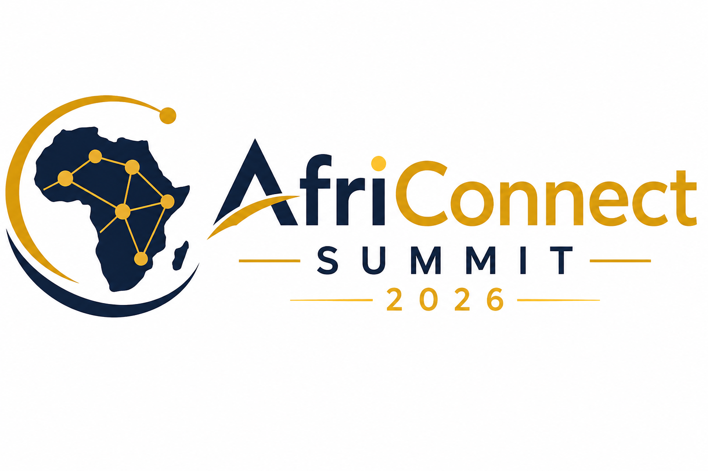

🚀 Innover
Découvrez les dernières innovations technologiques africaines.

Le rendez-vous incontournable des développeurs, entrepreneurs, startups et investisseurs africains.
Rejoignez trois jours de conférences, d'ateliers pratiques, de réseautage et de découvertes technologiques.
S'inscrire maintenant Voir le programmeAfriConnect Summit 2026 est une conférence panafricaine dédiée à l'innovation numérique, à l'intelligence artificielle, à la cybersécurité et à l'entrepreneuriat technologique.
Découvrez les dernières innovations technologiques africaines.
Rencontrez des experts, startups et investisseurs.
Participez à des ateliers pratiques et des conférences.
Date : 10 au 12 juillet 2026
Lieu : Dakar Arena, Sénégal
Horaires : 09h00 - 18h00
Entrée : Sur inscription
Participants attendus
Intervenants internationaux
Pays représentés

Experte en Intelligence Artificielle

Entrepreneur Tech et Fondateur de Startup

Consultante en Cybersécurité
Il suffit de remplir le formulaire d'inscription.
Oui, l'accès est gratuit après validation de l'inscription.
Réservez votre place dès aujourd'hui et participez au plus grand événement technologique africain.
Je m'inscris